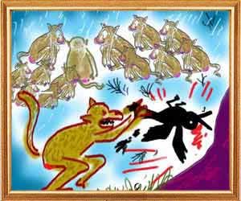

Gang of monkeys made their home in a mountain slope. When winter came, it brought not only severe cold but also heavy rains. Unable to stand the cold, the monkeys collected red berries wildly growing in the mountain slope. They gathered around the berries and began blowing air at them thinking they were embers.
Watching their vain effort in amusement, Suchimukha, a bird, told them, “You fools, they are not embers but red berries. Why do you waste your energy on them? This will not save you from cold. Go and look for a shelter in a cave or a place free from wind. The clouds are thick and there will be no immediate relief from rain.”
An old member of the monkey gang angrily told the bird, “Why do you poke your nose in our affairs? Go away. Haven't the elders said that he who cherishes his welfare should not talk to a gambler or an inefficient workman. So is the person a fool who talks to an idiot or a pleasure seeker.”
Disregarding the old monkey's anger and not giving room to any other monkey to talk, Suchimukha went on repeating his advice to them to seek shelter elsewhere. Tired with the bird's unwanted advice, one of the monkeys sprang at the bird and bashed him against a rock till he was dead.
Karataka said at the end of the story, “If you counsel a fool it will only provoke him and not pacify. If you feed milk to a snake it will increase its store of poison. That's why you should not offer advice to everyone. Look, how two good sparrows lost their home, all due to a foolish monkey.”